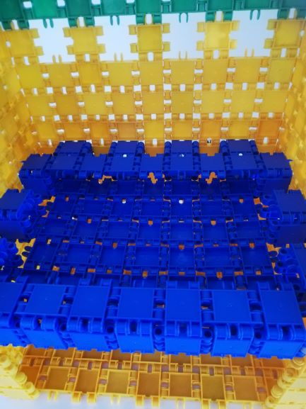
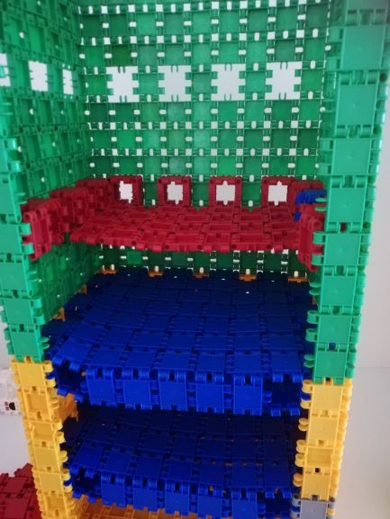
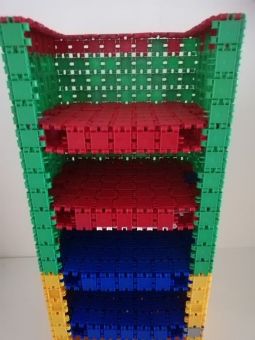

This was a handy project of ours. Sinds they never played very well with clics ending up me finding them everywhere. I decided to use them for a purpose. First we sorted them all out and made them into rolls. (A bit perfectionist on my side because it probably would just be as handy with the colors mixed) A step you probably can skip.
So we started to make a base of seven length and nine wide. then building up the sides leaving holes where the shelf would be, I made 3 rows and then an opening. Then I made squares to put on the holes and finished my shelfs. It was actually pretty easy and fast going. In total I have used 942 clics.
 